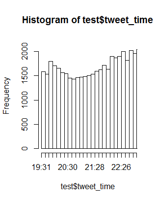

Paul Middendorf
Wyatt Dunn
1/28/16
Project Overview
We are studying Twitter. Twitter is a social network that allows users to send “tweets”. Tweets are visible to the public and are limited to 140 characters. We are specifically interested in the tweets, especially the content, location of the tweets and the time when they were posted. Twitter has 289 million active users[1]. These users send about 500 million tweets a day[2]. This massive amount of tweets is like a “stream of consciousness” for the general public. So if one was to take the general opinion or reaction of twitter as a whole in response to a certain event, they could generalize that as representative of the opinion of the public at large.
<Example embedded tweet>
“This is an example of a tweet”
This easily accessible large dataset that effectively represents so well the general opinion lead us to wonder if we could draw some conclusions about how people react to popular events. In the past this would have been almost impossible to do, but the information available through Twitter makes it possible to get an understanding of how people feel about current events. The datasets are actually so large, that we can even gain an understanding of the mechanics of how people talk about events, how opinions spread, and how long it takes for people to form reactions.
With 500 million tweets in a day there is just far too much data for the scope of this project. It isn’t reasonable for us to try and analyze data about everything that every user is tweeting about. So, we decided to limit our data to only tweets that have some relation to Super Bowl 50. Super Bowl 50 was a massive cultural event, with over 100 million viewers. So, even though this limited the amount of tweets we collected there was still enough people talking about it to allow us to collect enough data to perform an analysis on. Super Bowl 50 can then be thought of as a model that we can then relate to other popular current events such as political debates, large concerts, sports, and eSports.
Twitter publishes a Streaming API that allows anyone with a twitter account to collect tweets in real time. We used a python script called Tweepy to access the twitter API. We collected tweets based on lists of keywords. The categories we used to separate the tweets are commercials, referees, big plays, and the halftime show.
<code box with example tweet in JSON format>
“This is what a tweet looks like as it comes from the Streaming API”
For more information on our data collection please see this page. <link>
As you can see every tweet has a wealth of data associated with it. We are mainly interested in the “text”, “created_at”, and “location” fields. Due to the nature of the data collection the tweets are spread across a large number of separate JSON files. To solve this we have a python script that reads every JSON file in the directory and combines them into a single file that contains the entire dataset. Then we have another script that writes the tweets to a .csv file containing only the fields we are interested in. This format makes the data easier to work with in R.
Please click here to see more detail on how we wrangled this data. <link>
So, now we have data. But what are we going to do with it? We have a few hypotheses that we can explore using this data. Firstly, it is intuitive to think that twitter trends will show a reaction to real life events. In this case, a trend is the frequency of tweets about a topic over time. This means that we expect to see a spike in how many and how often people are tweeting about topics related to an event immediately after it happens. We also have a working theory about how these trends will be shaped. We anticipate a rapid and sharp spike immediately following the event, then a slow decay in popularity of related topics in the time after the event. These trends should follow a fairly consistent pattern. We expect the trends that correspond to most events to match the shape described above.
Example Data from Halftime Show Data Frame
<insert placeholder figure>
“this graph shows a trend with the time marked on it of when the corresponding event occurred"
<graphs of frequency of tweets by keywords>
There is also the content of people’s reactions and opinions, ie what are people actually saying, not just how they are saying it. Any Hypothesis we could come up with about this would be dependent on the exact event and the context in which the event happened. Therefore, our general hypothesis is that the general reaction to an event is context sensitive. This makes logical sense, seeing as how nothing really happens in a vacuum. Even the frequency of an event, or if the event has happened before at all could affect the nature of twitter users’ reactions and opinions. Take for instance a turnover in a football game. If the score of the game is ten to ten and a turnover occurs, it is extremely significant to the game and its viewers. We would expect to see a lot of tweets about it, and the content of those tweets to be very emotional and excited. However, if the game is thirty-five to nothing, we would expect the content of the tweets to be more subdued.
<similar figures as above, but only of certain subsets of tweets>
“This figure would show how twitter reacted to multiple turnovers over the course of the game”
This is a place holder paragraph. We will talk about the qualitative side of our analysis here. Perhaps we can see that X% of all tweets about Y topic were negative over the course of the game. Or perhaps we can insert a figure here that shows the frequency of words with a positive/negative/etc. connotation and mark interesting events on this figure.
All of the code we used for this analysis is available on our github. Please click here for an explanation of how we made these figures. <link>
Data Collection
This section explains some of our data collection techniques. As mentioned in the main article we took advantage of a git project called Tweepy that allows us to easily interact with the Streaming API. To utilize Tweepy we used python scripts from badhessian.org. These scripts required only a little bit of modification for our purposes. There is slistener.py which handles the tweepy interaction and saving the tweets to a file.
<slistener.py code box>
We ran our scripts for the duration of the Super Bowl, which was about four hours. During this time we collected over a gigabyte of tweets in the standard Twitter API JSON format. The Streaming API is rate limited, so we did not obtain literally every tweet that contained one of our keywords, especially because at times our scripts were manually limited by a short pause. This was because the stream of tweets at times exceeded what a=our computers could process and simply crashed the python scripts.
- Using Tweepy For Streaming
- Guide to streaming with Tweepy
- Tweepy Git page
Data Wrangling
This section describes the techniques we used to transform the data into a format that we could perform analysis on. After we collected the tweets we had hundreds of separate .json files. So, we wrote a python script to combine all the files into one for each category.
<code box with merge script>
Now the data is a little easier to handle, from a few hundred files down to four. But, we still need to pull out the information we need and put it into csv format. To do this we wrote another short python script that loads in our large json file and parses each tweet for the data we are looking for.
<code box with JSONtoCSV script>
After running this script the tweets are now in a clean csv file that can be imported to R studio for analysis.
Data Analysis
We used R Studio to create the various graphs seen in this project. Once the data was transformed into the csv files we imported it into R Studio. From there we used the ggplot2 package and the built in plotting functions of R to create the figures.